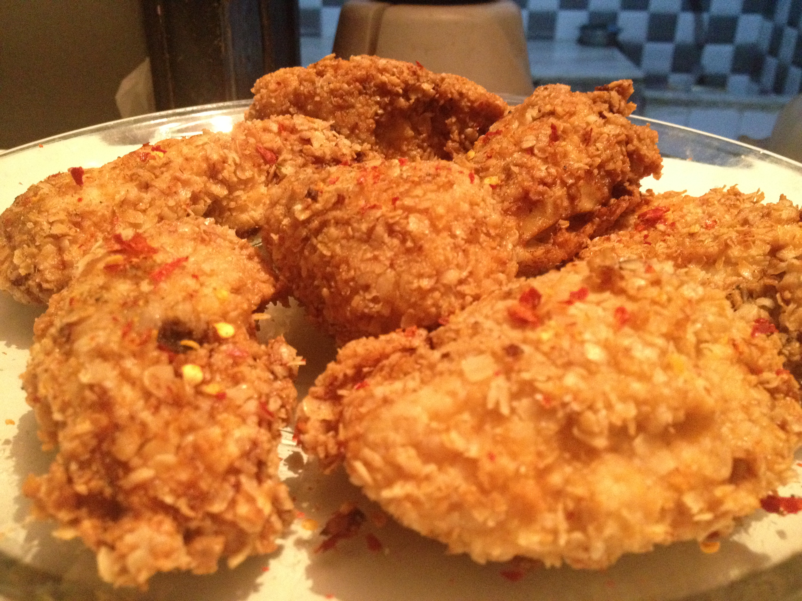

Crispy Fried Chicken Recipe

Description
This crispy fried chicken recipe gets you the juiciest, most flavorful and crispiest chicken every time. We aim
for crispiness on the outside and juiciness on the inside
Ingredients
- 1 (4 pound) chicken, cut into pieces
- 1 cup buttermilk
- 2 cups all-purpose flour for coating
- 1 teaspoon paprika
- salt and ground black pepper to taste
- 2 quarts vegetable oil for frying
Steps
- Cut the skin away from the chicken pieces if you prefer.
- Place flour in a large plastic bag (let the amount of chicken you are cooking dictate the amount of flour
you use). Season flour with paprika (which helps to brown the chicken), salt, and black pepper.
- Dip chicken pieces in buttermilk, then transfer a few at a time to the bag with flour. Then seal the bag and
shake until well coated. Repeat with remaining chicken.
- Place coated chicken on a baking sheet or tray, and cover with a clean dish towel or waxed paper. Let sit
until the flour is a paste-like consistency. This is crucial!
- Fill a large skillet (cast iron is best) to about half full with vegetable oil. Heat it until it is very
hot.
- Carefully lower as many chicken pieces into the skillet as it can hold. Fry in hot oil on both sides until
brown.
- When browned, reduce heat and cover the skillet. Cook it for 30 minutes (the chicken will be cooked through
but not crispy). Remove the cover, raise heat again, and continue frying until crispy.
- Drain fried chicken on paper towels. Depending on how much chicken you have, you may have to fry in a few
batches. Keep the finished chicken in a slightly warm oven while frying the rest.
Home